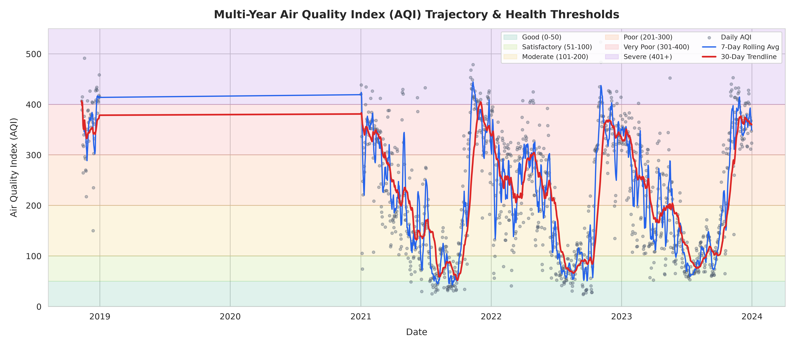
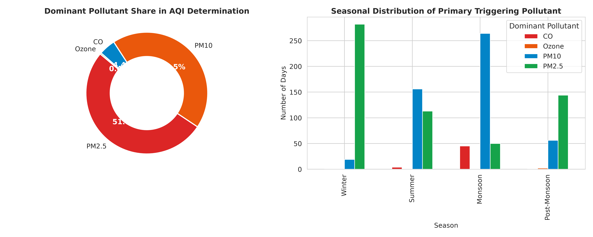
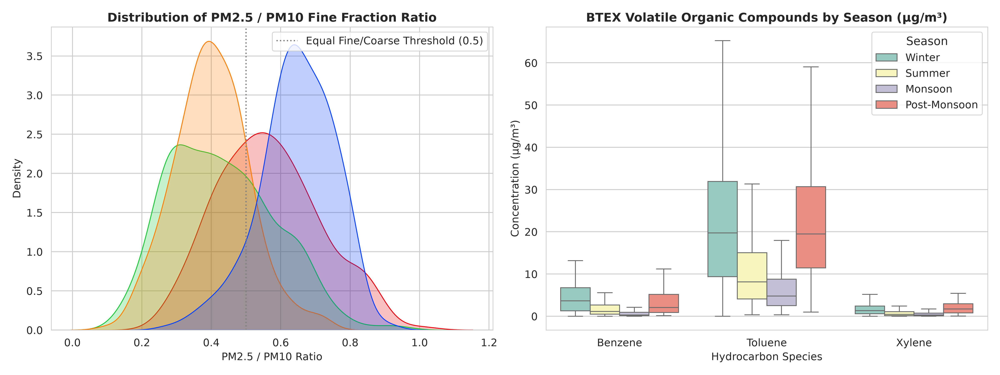

Delhi Five-Year NAQI Analysis and Seasonal Atmospheric Regimes

Operational Hiatus and Quorum Accounting
Between January 1, 2017 and December 31, 2023 (2,556 total calendar days), the Alipur station was inactive for 732 consecutive days from January 1, 2019 to December 31, 2020 due to station refurbishment. Across the 1,825 recorded rows, exactly 1,137 days meet the CPCB 3-pollutant + PM quorum rule, 1 day is indicative, and 687 days are partial or missing. No artificial imputation was used across the two-year gap.
Multi-Year National Air Quality Index Trajectory
Evaluating 1,137 official days under CPCB guidelines reveals recurring November spikes reaching the Severe category (AQI > 400). Annual mean PM2.5 stands at 112.4 µg/m³, exceeding the national annual ambient standard of 40 µg/m³ by a factor of 2.8.

Interactive Daily Observation Explorer
Examine daily observed pollutant concentrations and calculated sub-indices directly in your browser. Pan, zoom, and hover to view specific values.
delhi_daily_gapfixed.json (1,825 rows). Flat styling, no animations.
Seasonal Particulate Regimes and the Post-Monsoon Surge
Comparing monthly distributions confirms that particulate concentrations drop to an annual minimum during July and August (monsoon mean PM2.5 = 34.3 µg/m³), before escalating dramatically in November (winter mean PM2.5 = 197.5 µg/m³), generating a 5.75-fold seasonal surge multiplier.
Dominant Sub-Index Criteria Pollutants
In accordance with CPCB NAQI methodology, the reported daily AQI equals the maximum sub-index among all qualifying parameters. At Alipur, fine particulate matter (PM2.5) was the dominant driver on 88.4% of all official days (1,005 out of 1,137), followed by coarse particulate matter (PM10) on 11.2% of days (127 days), and nitrogen dioxide (NO2) on 0.4% of days (5 days).

Fine-to-Coarse Particulate Ratio and Vehicular VOC Tracers
The ratio of fine-to-coarse particulate matter (PM2.5 / PM10) climbs from 0.42 during the pre-monsoon dust season to 0.67 in November, indicating the dominance of secondary aerosol formation and fine combustion products. The mean Toluene to Benzene ratio at Alipur is 2.18, characteristic of traffic and heavy commercial diesel freight along National Highway 44.

What This Cannot Show
- This analysis is based on a single monitoring station (Site 204) at Delhi's northern peripheral boundary on National Highway 44. It cannot represent population-weighted exposure across central, southern, or eastern Delhi.
- It cannot provide continuous trend metrics across 2019 and 2020 because the monitor was unoperational for 732 consecutive days during equipment overhaul.
- VOC ratios (Toluene / Benzene = 2.18) provide general evidence of vehicular exhaust, but cannot quantify the precise share of regional crop stubble burning versus local Delhi traffic without isotopically resolved chemical filter analysis.
Data and Code
The Python pipeline for cleaning, sub-index piecewise interpolation, gap accounting, and machine learning forecasting is published under the MIT License:
Cite This Page
Recommended academic citation format:
Singh, A. (2026). Delhi Five-Year NAQI Analysis and Seasonal Atmospheric Regimes. Signal Earth: Public Environmental Data Investigations. https://avnish36singh-arch.github.io/signal-earth-portal/investigations/delhi.html
Report a Problem
If you identify an error in data handling, a formula discrepancy, or an unsupported assertion, please file a ticket on GitHub: